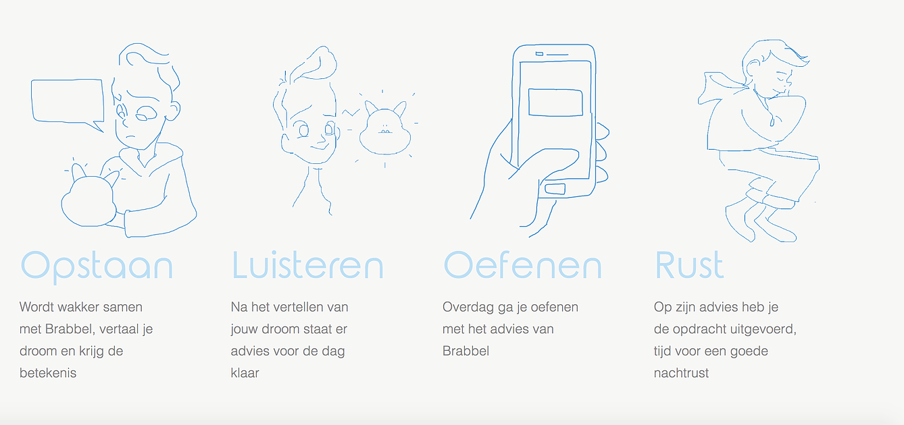
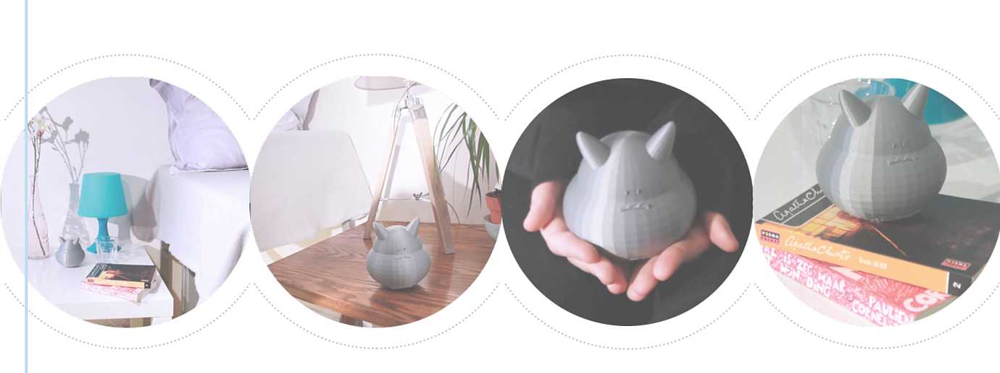

Brabbel

Het maken van een interactief product dat de slaap en het in slaap vallen ondersteunt en verbetert. Bij het maken van het product moesten wij uitgaan van een herontwerp van de ikgalekkerslapen app. Het doel van het product was ervoor zorgen dat de gebruiker makkelijker en fijner in slaap valt. Ook moet de smartphone zover mogelijk van de slaapkamer verwijdert zijn.
Het project bestond uit een aantal intensieve weken waar geen tijd verspilt kon worden. Bij het ont-werpen van het product moest er erg veel onderzocht worden. Wij hadden de kant van de dromen gekozen en deden dan ook onderzoek naar de betekenis van dromen. Na het kiezen van een kant moesten wij gaan uitzoeken hoe wij dromen gingen verwerken in een product. Het eerste dat in ons op kwam was dat iedereen de betekenis van zijn/haar droom wilt weten en dat dromen een reflectie zijn van wat jij in het dagelijkse leven mee- maakt. De laatste stap was het bedenken hoe de interactie zou verlopen en hoe ons product eruit zal zien. En dat was de taak die ik op mij nam.
Uiteindelijk is brabbel ontstaan. Een monstertje met een lieve uitstraling die jou gaat helpen om een betere nachtrust te creëren. Wanneer jij Brabbel jouw droom vertelt zal Brabbel een aantal steek-woorden onthouden en hiervan een diagnose stellen. Met deze informatie geeft Brabbel jou persoonlijk advies wat jij kan verbeteren of juist moet vasthouden. Zo werken jij en Brabbel samen aan een betere nachtrust.
